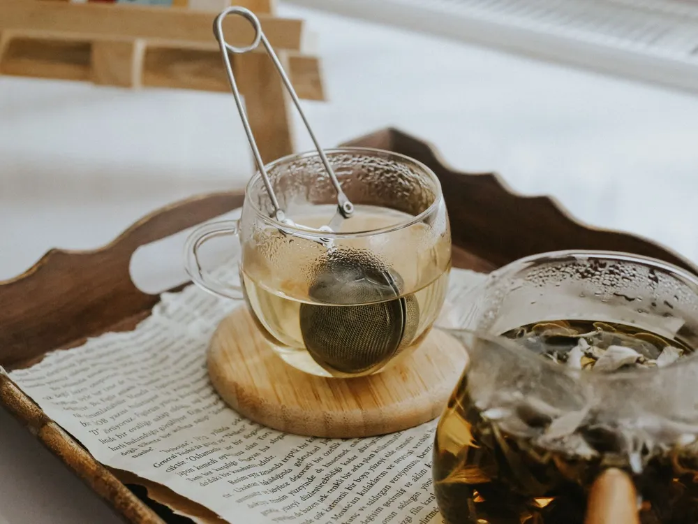

The tea club.
Each month we choose two or three teas that are at their best, pack them and post them on the first Monday. There is nothing to remember and nothing to cancel in writing: pause, skip or stop from your account, or send us a message.
- Choose a plan. Two teas, three teas, or three teas and a treat.
- We pick. Whatever is freshest on the racks that month, never the same set twice in a row.
- Posted on the first Monday. In a letterbox-sized box, with a brewing card and a note.

Choose your plan.
What came last summer.
- JuneChamomile, lemon balm, peppermint
- JulyLime blossom, nettle, Quiet Hours
- AugustPeppermint, lemon balm, chamomile